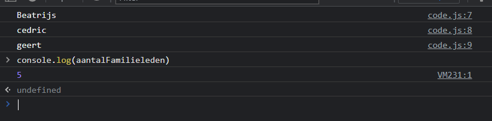
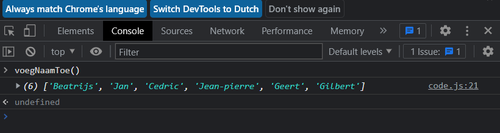
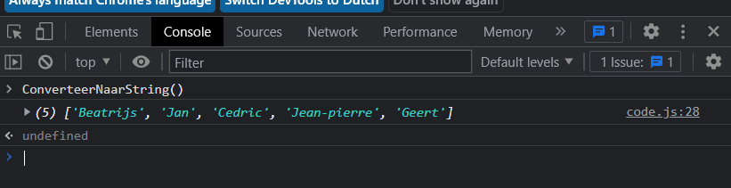
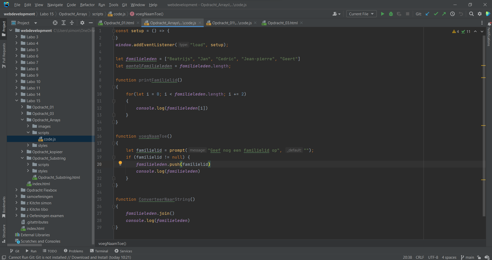

Schrijf naar de console hoeveel elementen de array bevat:

Schrijf het eerste, derde en vijfde element uit de array naar de console:

Vraag met prompt() een extra naam op en voeg deze toe aan de Array. Probeer dit via een zelf
geschreven functie VoegNaamToe. Maak gebruik van pass-by-reference. Schrijf vervolgens het
resultaat naar de console.

Converteer de array naar een string en toon deze op de console:

Foto van mijn javascript code:
